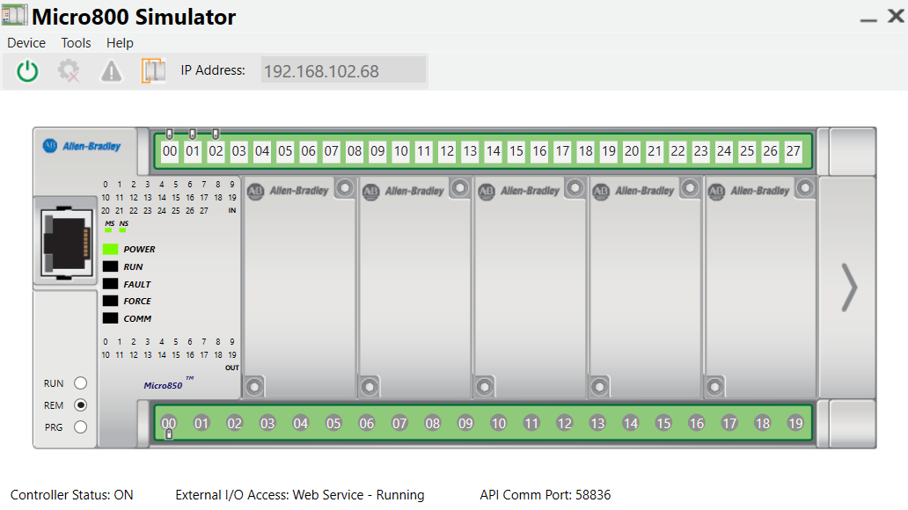
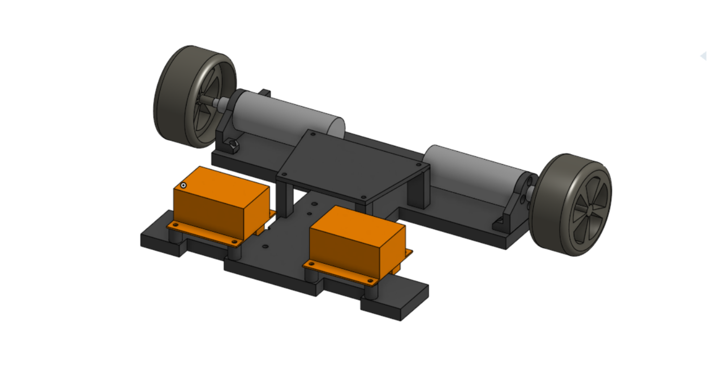
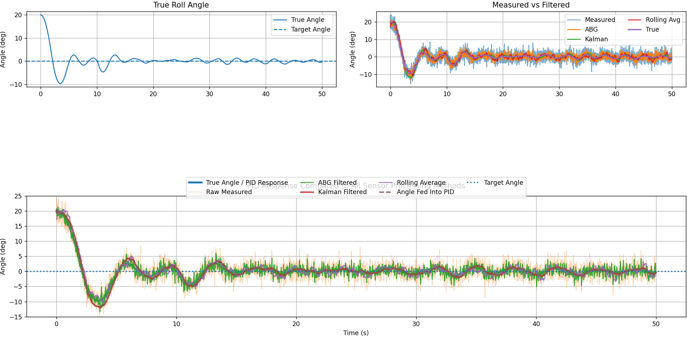
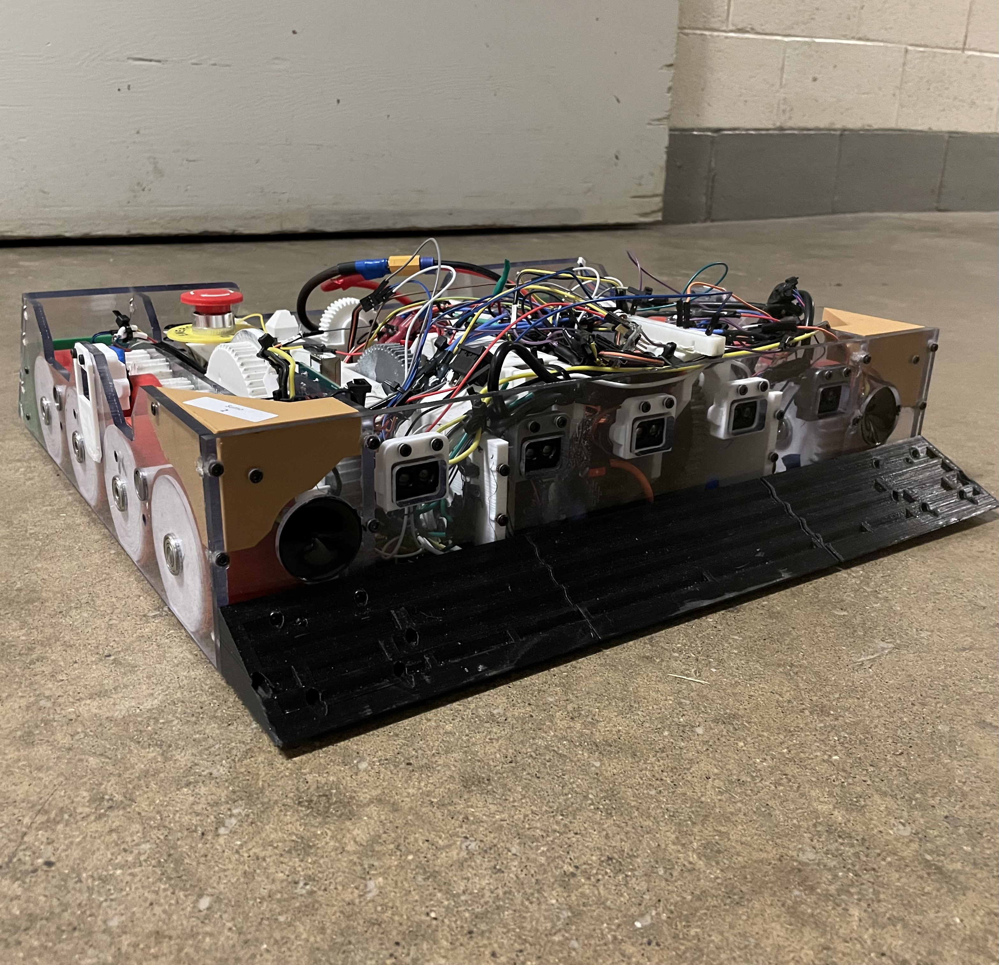

Projects
Projects chosen to show controls, automation, embedded programming, and system-level troubleshooting.

Smart Elevator PLC Simulator
Designed a Rockwell CCW elevator simulation using ladder logic, state-machine structure, floor requests, and target-floor handling.
PLC · Ladder Logic · State Machines
Dead-Reckoning Robot Cart
Built an ESP32 differential-drive robot using encoders, IMU data, motor drivers, and PID control for motion estimation.
ESP32 · PID · Encoders · IMU
Roll Stabilization Simulation
Created a Python control simulation comparing PID response, noisy measurements, rolling averages, and filtering methods.
Python · Controls · Filtering
Sumo Bot
Programmed a competitive robot using C++, LIDAR-based detection, and control logic, earning 3rd place.
C++ · Robotics · Sensors
1996 Cadillac DeVille Restoration
Ongoing systems restoration project focused on diagnosing and reviving a long-stored Northstar V8 Cadillac through staged inspection, electrical troubleshooting, and mechanical preparation.
Automotive · Troubleshooting · Electrical · Mechanical SystemsTechnical Skills
About Me
I’m an Electrical Engineering student focused on building practical systems that connect
software, hardware and controls. My projects are centered around automation,
robotics, embedded systems, and automotive-related engineering.
When I'm not spending my time on projects I enjoy snowboarding, listening to music, and spending time with friends and family.
Contact
Email: logandefour@gmail.com
GitHub: Add your GitHub link